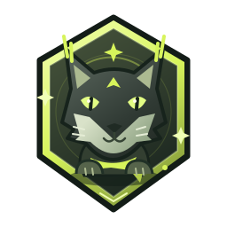
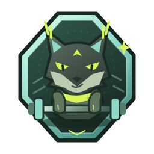
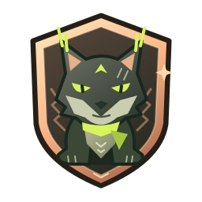
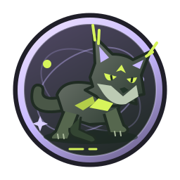
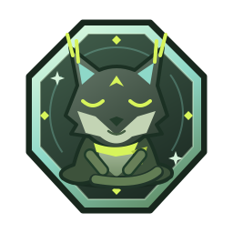
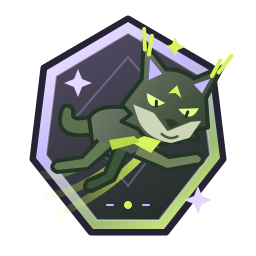

Despertar
Todo empieza con una decisión.
Descargar SVG ↗Kyo, el lince que crece contigo. Seis ilustraciones originales, seis capítulos de una historia que solo tú puedes escribir.

Todo empieza con una decisión.
Descargar SVG ↗
Ese momento en que todo fluye.
Descargar SVG ↗
La fuerza se construye, paso a paso.
Descargar SVG ↗
Tu ritmo. Tu propio camino.
Descargar SVG ↗
Volver también es avanzar.
Descargar SVG ↗
No eres quien eras ayer.
Descargar SVG ↗